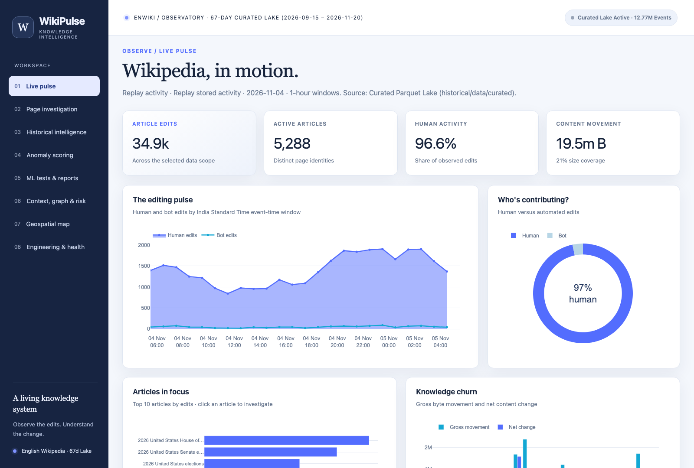
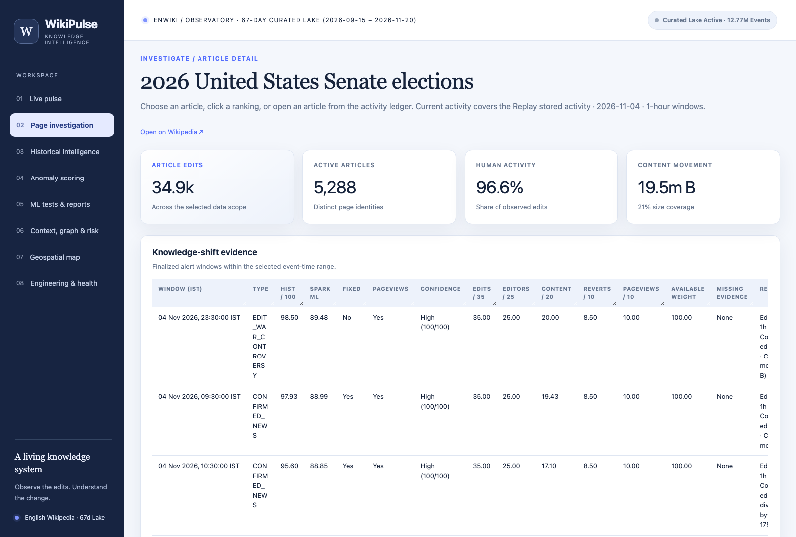
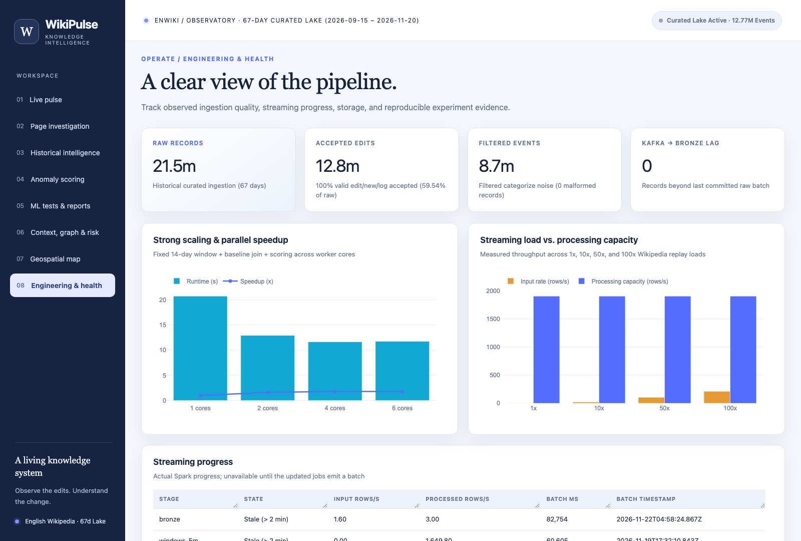

21.45M → 12.77M
Raw → clean events in 67 days (100% valid kept)
5.83 GB churn
60% of all edited text is rewriting
65% → 9% / 0%
False alerts: fixed rule → our score / Spark ML
< 1.35 s
Dashboard query time (target < 2 s)
1. Problem
1.1 Definition
Wikipedia reacts to real-world events within minutes. Elections, plane crashes, outages and public controversies cause sudden bursts of edits, new editors, large text additions or revert battles on the affected pages. The signals needed to understand these bursts are spread across several Wikimedia services: the live EventStreams feed shows edits but has no history; the MediaWiki Action API and Analytics REST API hold past edits and page views; link graphs show related pages; and revision diffs, Wikidata locations and Lift Wing revert-risk scores add context.
WikiPulse brings all of these together in one fault-tolerant platform. It compares live activity on each page with that page's own history, flags unusual activity with an explainable score and a Spark ML model, separates real news from edit wars and routine maintenance, and adds context such as related pages, text changes, a subject map and revert risk.
1.2 Motivation: Why Fixed Thresholds Fail
A simple rule such as "6 or more human edits in 5 minutes" does not work, because normal activity on Wikipedia pages differs by more than 10,000 times:
| Activity Tier | Normal Edits per Day | Share of 3.31M Pages | What Goes Wrong With a Fixed Rule |
|---|
| Quiet | under 0.2 | 92.31% | 4–5 edits in 5 minutes is a huge change, but the rule misses it. |
| Moderate | 0.2 to 2 | 6.57% | Needs a per-page baseline to judge what is unusual. |
| Active | 2 to 15 | 1.04% | Needs editor surge and page-view checks. |
| Hyperactive | 15 or more | 0.08% | Pages like Deaths in 2026 (71 edits/day) trigger the rule every hour. |
So a fixed rule fails both ways: it raises false alarms on busy pages (65% of its alerts were false) and misses real changes on quiet pages (only 60% recall on test cases). It also confuses edit wars with breaking news.
1.3 Design Goals
- G1. Durable, replayable ingestion — resumable collectors, live stream with resume cursor, Apache Kafka broker and replay at 1x–100x speed.
- G2. Event-time correctness — 10-minute watermark and duplicate removal before building 5-minute and 1-hour windows.
- G3. Fault tolerance — checkpoints for every streaming stage, stable alert IDs and safe Parquet writes, so restarts never create duplicates.
- G4. Horizontal scaling — partitioned Parquet storage, multi-partition Kafka topics and tuned Spark shuffle settings.
- G5. Explainability — every alert shows a score breakdown and at least two plain-language reasons.
- G6. Reproducibility — synthetic test patterns, 45 automated tests and a one-command offline demo (
./run-demo.sh).
1.4 Features Required
| Feature | What It Does |
|---|
| F1–F2. Knowledge-Shift & Breaking-News Radar | Scores 5-minute and 1-hour windows using edit speed, editor count, text churn, page history and related-page activity. Alerts stay "candidate" news until page views confirm them, and edit wars and major rewrites are labelled separately. |
| F3. Edit-Risk Monitor | Filters out routine edits in Spark, scores risky edits with Wikimedia Lift Wing, and checks the results against real reverts within 48 hours. |
| F4. Global Subject Map | Places alerted article subjects on a map using Wikipedia and Wikidata coordinates. No editor IP addresses are ever collected. |
| F5. Knowledge Churn & Bot Ratio | Splits total edited text into net growth and rewriting, and compares human, temporary-account and bot activity. |
1.5 Scalability & Performance Goals
The proposal set six performance targets: (P1) at least 99% of valid events stored; (P2) no duplicate alerts after restart or replay; (P3) each closed 5-minute window processed within 60 seconds under load; (P4) processing faster than input, with backlog draining to zero after restart; (P5) runtime, shuffle, memory and storage reported for all scale tests; (P6) dashboard queries under 2 seconds. It also set eight feature-quality targets (F1–F8), listed with results in Section 4.
2. Approach and Methods
2.1 High-Level Design
WikiPulse uses one pipeline for both live and historical data. Live edits and 67 days of history are converted to the same 29-column event format, so the same Spark code builds baselines, windows and alerts for both. The design has five layers: sources, ingestion, Spark processing, Parquet storage and the dashboard (Figure 1).
2.2 Architecture & Data Model
We collected 67 days of English Wikipedia activity (15 Sep – 20 Nov 2026): 21.45 million raw events, 1.46 GB compressed (about 9.6 GB as plain JSON). During cleaning we solved three practical problems: (1) we recovered 269,017 rows from a half-written compressed file left by an interrupted run; (2) we removed 8.68 million (40%) category-maintenance events and duplicate events at day boundaries, while keeping 100% of valid edits; and (3) we gave live edits that arrive without a page ID a stable generated ID, so they are never lost or mixed up.
The proposal planned 5 data models; we built 8 schemas plus 2 summary tables, all stored as Parquet:
| Table | Rows (67 days) | What It Stores |
|---|
rc_events | 12,773,366 | Clean edit events in the shared 29-column format, split by day. |
page_baselines | 3,307,257 | Each page's normal activity over 47 days, its activity tier and page views. |
page_windows_5m / 1h | 970,793 + 525,714 | Per-page activity in 5-minute and 1-hour windows (edits, editors, bytes, surge). |
alerts | 10,631 | Detector outputs, alert type, plain-language reasons and score breakdown. |
graph_edges | 608 | Links to and from alerted pages, marked if also edited in the same window. |
revision_diffs | 100 | Cleaned text snippets of what changed in each revision. |
map_points | 160 | Subject coordinates with location source and quality. |
revert_risk_eval | 120 | Lift Wing risk score, fallback score and actual 48-hour revert result. |
churn_bot_summary, rankings_daily | 1,623 & 23,535 | Daily summaries of churn, bot share and top surging pages for fast dashboards. |
2.3 Big Data Platforms Used
- Apache Kafka 3.9.1 (KRaft mode, no ZooKeeper): holds the live edit stream in 3-partition topics with safe, duplicate-free producers. A file-based fallback lets the system run without Docker.
- Apache Spark 4.2.0 (DataFrames & Structured Streaming): does all cleaning, baselines, streaming windows and scoring. RDDs are used only in Experiment 3 for comparison.
- Spark ML, Parquet, PyArrow and Dash/Plotly: Spark ML trains the detection models, Parquet gives compact column storage that can skip unneeded days, PyArrow reads it quickly, and Dash/Plotly serve the 8-screen dashboard.
2.4 ML Methods Used
Every time window is checked by three detectors, and risky edits get a revert-risk score:
- Detector A — Fixed Rule (baseline for comparison): flags a window if it has at least 6 human edits by 3 editors in 5 minutes (or 15 edits by 4 editors in 1 hour).
- Detector B — Explainable History Score (0–100): compares the window with the page's own 47-day history using five parts — edit speed, editor surge, text churn, revert behaviour and page views. The parts add up exactly to the final score, so users can see why an alert fired. Bot-only activity is ignored and routine activity on busy pages is down-weighted. Alerts are labelled Confirmed News, Breaking-News Candidate, Edit War or Major Rewrite.
- Detector C — Spark ML (two stages): KMeans groups windows into 6 editing patterns (e.g. normal quiet, edit war, collaborative surge, bot maintenance) and measures how far each window is from "normal". A Random Forest (40 trees) then uses this distance plus 8 activity features to score the window. Number of editors and number of human edits matter most.
- Revert Risk (Wikimedia Lift Wing): Spark first filters out 75% of routine edits; the rest are scored by Lift Wing, with a simple rule-based fallback if the service is down. Scores are checked against actual reverts within 48 hours to pick the best threshold.
3. Evaluation
3.1 Experiment Design
We ran all six experiments from the proposal:
| Experiment | What We Did |
|---|
| 1. Correctness & Replay | Compared Spark totals with a hand-written Python check on 2,000 events; replayed one day (182,521 events) with 30% duplicates added. |
| 2. Detector Comparison | Ran Detectors A, B and C on 5 injected shift patterns, 2 negative controls, 8 days of real data and a manually reviewed 200-window sample. |
| 3. DataFrame vs. RDD | Same 7-day churn job (747,156 edits) written both ways. |
| 4. Scaling | Varied CPU cores (1–6), data per core, shuffle partitions (4–128) and input size (1–46 days, up to 8.43M rows). |
| 5. Streaming & Recovery | Replayed at 1x–100x speed; stopped mid-day, built a 123,537-event backlog and restarted. |
| 6. Storage & Query Speed | Compared queries on raw compressed JSON with queries on stored Parquet for every dashboard view. |
3.2 Scalability & Performance Metrics
| Experiment 4 Test | Setup | Input Rows | Runtime |
Speedup / Throughput | Shuffle | Peak Memory |
| Strong scaling (14 days) | 1 core | 2.47M | 18.97 s | 1.00x | 281 MB | 628 MB |
| Strong scaling | 2 cores | 2.47M | 12.20 s | 1.55x | 281 MB | 846 MB |
| Strong scaling | 4 cores | 2.47M | 11.21 s | 1.69x | 281 MB | 1,046 MB |
| Strong scaling | 6 cores | 2.47M | 12.40 s | 1.53x | 281 MB | 1,139 MB |
| Weak scaling (4 days/core) | 1 → 2 → 4 → 6 cores | 0.72M → 4.20M | 6.8 → 19.2 s | peak 250k rows/s | 102 → 462 MB | ~1.0–1.3 GB |
| Input size | 1 → 46 days | 0.19M → 8.43M | 2.4 → 38.1 s | 221k rows/s (linear) | 26 → 861 MB | 0.7–1.1 GB |
- Experiment 3 — DataFrame vs. RDD: DataFrames took 1.3–2.2 s versus 2.7–6.2 s for RDDs, a 2.0x–2.9x speedup, because Spark's optimizer avoids slow Python serialization.
- Experiment 4 — Shuffle partitions: 16 partitions was fastest (10.0 s); 128 partitions took 18.1 s due to task overhead. Using 16 cut runtime by 45%. Speedup stops after 4 cores because shuffle and memory costs grow on a single laptop. In weak scaling, efficiency stayed high at 2 cores (0.93) and dropped to 0.61 at 4 cores, for the same reason.
- Experiment 5 — Streaming & recovery: at 1x–100x replay speed, Spark processed 2,266–55,834 rows/s, far above the input rate (2–211 rows/s), and closed each 5-minute window in 0.4–9.5 s (target 60 s). After a forced stop, it cleared a 123,537-event backlog in 13.7 s with zero duplicate alerts and the same 39 alerts as an uninterrupted run.
- Experiment 6 — Query speed: scanning one day of raw compressed JSON took 2.2–3.2 s; Parquet queries took 0.003–1.34 s across all views, about 14.5x faster and within the 2-second target.
3.3 Feature Metrics
- Experiment 1 — Correctness: Spark totals matched the hand-written check exactly on all 2,000 events (edits, humans, bots, bytes added, removed and rewritten), and replay with 30% duplicates produced 0 duplicate alerts.
- Experiment 2 — Detector comparison: the fixed rule missed a 2-editor major rewrite and a burst on a quiet page (60% recall) and falsely fired on routine busy-page activity. Detectors B and C found all 5 test shifts with 4–5 reasons each and no false triggers.
| Detector | Alerts (8 days) | Precision | False-Alert Rate | Reviewed Sample False Alerts | Test Recall |
|---|
| A: Fixed Rule | 349 | 34.96% | 65.04% | 41.32% | 3 / 5 |
| B: History Score | 1,028 | 90.86% | 9.14% | 1.55% | 5 / 5 |
| C: Spark ML | 817 | 100.00% | 0.00% | 0.00% | 5 / 5 |
- Context features: 100% of revision diffs gave usable change data; 57% of related-page links were also edited in the same window; 77% of alerted subjects were placed on the map, and the rest were kept as "unlocated" (never dropped). Revert-risk scores were available for 100% of edits; lowering the threshold from 0.80 to 0.65 raised F1 from 68.6% to 76.9% (recall 83%).
- 67-day insights: of 11.59M content edits, registered humans made 67%, bots 26% and temporary accounts 8%. Of 5.83 GB of edited text, 60% was rewriting and only 38% was net new content.
| Real Case & Alert Type | Activity | Detector Result | Context |
|---|
Confirmed News
2026 US Senate elections | 42 edits, 11 editors in 1 hour; no reverts | A: yes · B: 97.9 · C: 87.8
Page views 29.7x normal | Related pages edited together; result-update diffs |
Breaking-News Candidate
Palm Beach Learjet crash | 14 edits, 6 editors in 1 hour | A: missed · B: 87.0 · C: 80.0 | "FAA & NTSB investigation" added; exact crash location |
Edit War
Keisha Lance Bottoms | 45 edits, 25 editors; 58% reverts | A: wrongly called news · B: 100 · C: 96.4 | Diffs show repeated reverts |
Major Rewrite
Mike Ditka | 15 edits by only 2 editors | A: missed · B: 84.8 · C: 64.2 | Large biography expansion |
3.4 Plots and Analysis
We built an 8-screen interactive dashboard (planned: 4). The 10 application screenshots below (2-by-2 half-width layout) capture every live, replay, investigation, geospatial, graph, ML, and health view:

Fig 2 — Live Pulse (/): Real-time Wikimedia EventStreams SSE → Kafka → Spark monitor showing live article edits, human/bot split, and byte movement.

Fig 3 — Live Replay Mode: Deterministic 1x–100x historical day replay over stored activity with synchronized window updates.

Fig 4 — Page Investigation (2026 US Senate elections): Additive knowledge-shift evidence table, observed hourly edits, and historical μ + 2σ baseline band.

Fig 5 — Page Inspection (2026 Microsoft outage): Real-time activity bursts, gross vs. net content movement, and contributor balance during a breaking cloud outage.

Fig 6 — Historical Intelligence (/historical): 67-day gross text churn (5.83 GB), rewriting volume decomposition (60.2%), and human vs. bot edit split.

Fig 7 — Privacy-Preserving Subject Map (/geospatial-map): Alerted article subjects mapped via 2-tier Wikipedia & Wikidata coordinates (zero editor IPs).

Fig 8 — Context, Spillover Graph & Risk (/contextual-features): Hub-and-spoke related-page spillover network, sanitized Compare diffs, and Lift Wing revert-risk calibration.

Fig 9 — Explainable Anomaly Scoring (/anomaly-scoring): Detector A, B, and C overlap, precision comparison, and single-alert additive score inspector.

Fig 10 — Spark ML Tests & Reports (/ml-reports): Unsupervised KMeans (k=6) behavioral cluster profiles and RandomForest feature importances.

Fig 11 — Engineering & Health (/system): Strong/weak scaling curves, shuffle partition tuning, streaming capacity, and lakehouse footprint.
Analysis: comparing each page with its own history is the key idea. It catches small bursts on quiet pages and ignores normal noise on busy pages. The explainable score tells users why an alert fired, while Spark ML adds a very precise second filter. Filtering in Spark before calling external services keeps enrichment fast enough for interactive use.
4. Summary
4.1 Ability to Achieve Design and Performance Goals w.r.t. Proposal
WikiPulse met all 5 features, 6 experiments, 6 performance goals and 8 feature goals from the proposal. It also went beyond the plan: 8 schemas instead of 5 (plus 2 summary tables) and 8 dashboard screens instead of 4, backed by 45 automated tests.
| ID | Goal | Target | Result | Status |
|---|
| P1 | Valid events stored | ≥ 99% | 100% (12.77M of 12.77M; 269k rows recovered) | MET |
| P2 | No duplicate alerts after restart | 0 | 0 duplicates (39 of 39 unique alerts) | MET |
| P3 | 5-minute window latency under load | < 60 s | 0.4–9.5 s at 1x–100x speed | MET |
| P4 | Keeps up with input; backlog clears | Backlog → 0 | 2,266–55,834 rows/s; 123,537 backlog cleared in 13.7 s | MET |
| P5 | Runtime, shuffle, memory, storage reported | All 4 | Reported for all scaling and RDD tests | MET |
| P6 | Dashboard query time | < 2 s | 0.003–1.34 s (~14.5x faster than raw) | MET |
| F1 | Test shifts found with ≥ 2 reasons | 100% | 5 / 5; all 10,631 real alerts have ≥ 2 reasons (avg 4) | MET |
| F2 | Fewer false alerts than fixed rule | Lower | 65% → 9% (B) and 0% (C) | MET |
| F3 | Usable revision diffs | ≥ 90% | 100% (100 of 100) | MET |
| F4 | Usable revert-risk scores | ≥ 95% | 100% (~90% Lift Wing + ~10% fallback) | MET |
| F5 | Risk threshold checked against real reverts | Curve | Best threshold 0.65; F1 68.6% → 76.9% | MET |
| F6 | Map points tagged; unlocated kept | 100% | 100% tagged (77% located, 0 editor IPs) | MET |
| F7 | Churn totals match manual check | Exact | Exact match on 2,000 events | MET |
| F8 | History views show data freshness | Shown | Last-available date and missing-data flags shown | MET |
4.2 Key Lessons
- Compare each page with its own past. Because 92% of pages are almost always quiet and a few are always busy, a page-specific baseline (that also counts the hours with no edits) was essential for catching quiet-page bursts while ignoring busy-page noise.
- Explainable scoring and ML work best together. The history score tells analysts exactly why an alert fired; Spark ML acts as a second, very precise filter.
- Filter first, enrich later. Removing 75% of routine edits in Spark and caching API responses on disk kept graph, diff, map and revert-risk context fast enough for an interactive dashboard.
- Plan for messy real-world data. Broken files, missing page IDs and duplicate events all appeared in practice; checkpoints, stable IDs and safe writes made restarts and replays safe.
4.3 Future Extensions
- Deploy and host: move from a single laptop to a cloud cluster (managed Kafka, Spark on Kubernetes or Dataproc, cloud object storage) and host the dashboard publicly with monitoring and alerting.
- Better validation: build a larger, human-labelled set of real events with several reviewers, and compare alerts against news timelines to measure precision and recall more reliably.
- Multiple language support: extend beyond English Wikipedia to other language editions, linking the same topic across languages through Wikidata to spot events that break first in regional wikis.
- Speed-up experiments: run scaling tests on a real multi-node cluster, and try caching, better partitioning and faster file formats to push throughput further.
- Multi-hop graph with Apache Spark GraphFrames: upgrade the current 1-hop Spark SQL link/backlink join to Apache Spark GraphFrames for distributed multi-hop neighborhood propagation, connected-component discovery, and PageRank centrality across related articles, tracking how breaking topics cascade across whole clusters in real time.
- ML pipeline improvements: manually review and label a verified sample of real alerts to improve training data quality, tune the existing Spark ML (
KMeans and RandomForest) parameters, and periodically retrain the model as new weeks of Wikipedia data arrive.